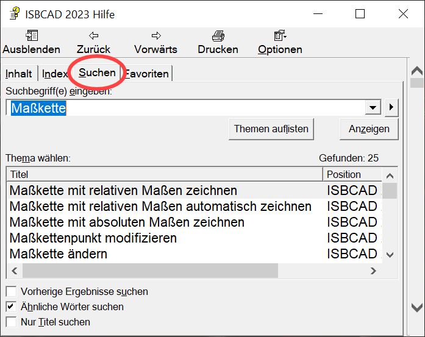

Optimieren Sie die Suchergebnisse mit verschiedenen Suchfunktionen. Erfahren Sie in diesem Artikel, welche Suchfunktionen Ihnen die Kontexthilfe für das schnelle Auffinden benötigter Informationen bietet.
Der Suchbereich
Um die Suchfunktionen anwenden zu können, öffnen Sie im Navigationsbereich der Kontexthilfe die Registerkarte Suchen und klicken Sie in das Suchfeld Suchbegriff(e) eingeben:. Geben Sie anschließend den Suchbegriff ein. Nutzen Sie Ausdrücke, Wildcards und Boolesche Operatoren, um Ihre Suche nach einem bestimmten Thema zu verfeinern.
 |

Suchbegriffe eingeben: Geben Sie hier einen bestimmten Suchbegriff, eine Wortfolge oder die entsprechende Suchsyntax mittels Boolescher Operatoren ein (s. weiter unten). Bestätigen Sie die Eingabe mit der Eingabetaste, um die Suche zu starten. Öffnet eine Liste mit den zuletzt gesuchten Begriffen. Öffnet die Optionen für die erweiterte Suche (s. Boolesche Operatoren weiter unten). Themen auflisten Klicken Sie auf diese Schaltfläche, um die Eingabe zu bestätigen. Sie können alternativ auch die Eingabetaste zum Bestätigen drücken. Anzeigen Zeigt den in der Ergebnistabelle Thema wählen: markierten Artikel im Anzeigebereich an. Gefunden: Zeigt die Gesamtzahl der Artikel an, in denen der gesuchte Begriff gefunden wurde. Thema wählen: Listet die Suchergebnisse auf. Suche einschränken Vorherige Ergebnisse suchen Wählen Sie diese Option, wenn Sie nur in den zuletzt gefundenen Artikeln eine weitere Suche durchführen wollen. Ähnliche Wörter suchen Sucht Wörter mit geringfügiger grammatischer Variation. Beispiel: Wird der Begriff "Maßkette" eingegeben, werden auch Begriffe wie "Maßketten" oder "Maßkettenstil" gefunden. Nur Titel suchen Sucht den eingegebenen Begriff nur in den Überschriften der Artikel. |
Volltextsuche, Ausdrücke und Wildcards (Platzhalter)
Eingabe |
Beispiel (Text im Suchfeld) |
Suchergebnis |
|---|---|---|
Einzelne Wörter oder Wortfolgen |
Maßkette |
In der Ergebnisliste werden alle Artikel aufgelistet, in denen der Begriff Maßkette vorkommt. Wenn Sie als Wortfolge z. B. Linie zeichnen eingeben, werden alle Artikel aufgelistet, in denen der Begriff "Linie" oder der Begriff "zeichnen" vorkommt. Diese Suchmethode ist sehr ungenau und Sie werden höchstwahrscheinlich nicht die Information finden, nach der Sie suchen. Präzisieren Sie daher Ihre Suche mit Ausdrücken, Wildcards und Booleschen Operatoren. |
Ausdrücke |
"Linien zeichnen" |
Setzen Sie Ihre Eingabe in Ausführungszeichen, um nur Artikel anzuzeigen, in denen die Wortfolge "Linien zeichnen" vorkommt. Alternativ können Sie auch den Booleschen Operator AND nutzen: Linie AND zeichnen (ohne Anführungszeichen). |
Wildcards I |
*kreis |
Es werden alle Artikel angezeigt, in denen mindestens ein Begriff vorkommt, der mit "kreis" endet oder dem Begriff "Kreis" entspricht. Beispiel: Kreis, Teilkreis, Vollkreis, Positionskreis usw. |
Wildcards II |
*kreis* |
Es werden alle Artikel angezeigt, in denen ein Begriff vorkommt, der sowohl mit "kreis" beginnen, enden und auch "kreis" enthalten kann. Beispiel: Kreisbogen, Bezugskreisbogen usw. |
Boolesche Operatoren
Ziel der Suche |
Beispiel (Text im Suchfeld) |
Suchergebnis |
|
|---|---|---|---|
Nach einer exakten Wortfolge suchen. |
Maßkette AND ändern |
Zeigt nur die Artikel an, in welchen die exakte Wortfolge Maßkette ändern vorkommt. |
|
Entweder die erste Eingabe im Artikel oder die zweite. Beide Eingaben dürfen nicht im selben Artikel vorkommen. |
Stift OR Stiftnummer |
Zeigt nur die Artikel an, die entweder den Begriff "Stift" oder den Begriff "Stiftnummer" enthalten. |
|
Die erste Eingabe soll im Artikel enthalten sein, die zweite aber nicht. |
Folie NOT sperren |
Zeigt alle Artikel an, die den Begriff "Folie" aber nicht den Begriff "sperren" enthalten. |
|
Beide Eingaben im selben Artikel und nicht weit voneinander entfernt. |
Maßstab NEAR Linie |
Es werden alle Artikel angezeigt, die entweder nur das Wort "Maßstab" oder im nahen Umfeld auch das Wort "Linie" enthalten. Die entsprechenden Artikel werden nur aufgelistet, wenn sich der erste bzw. zweite Begriff mindestens innerhalb von 8 Wörtern zum anderen Begriff befindet. |
|
Beispiel Operator "NEAR": "Der Maßstab ist abhängig von der Eingabe der Verlegehöhe. Haben Sie bei der ersten Verlegehöhe eine Linie angeklickt, wird der Maßstab der Linie übernommen.
|
|||
Siehe auch: